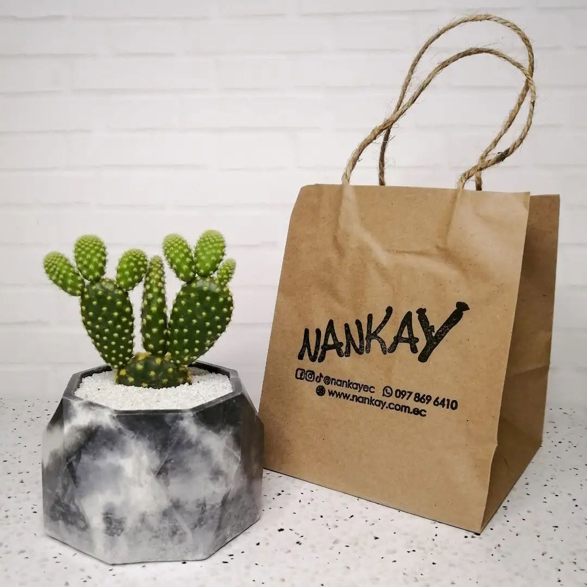
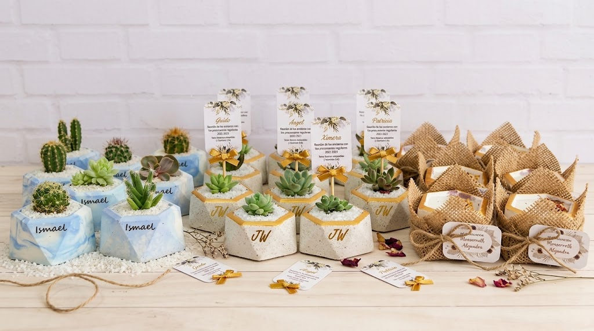

NANKAY
Tú imaginas, nosotros lo creamos.

Arte y Naturaleza en un solo lugar
Nos especializamos en la elaboración artesanal de piezas únicas en cemento combinadas con hermosas plantas ornamentales para llenar tus espacios de vida y elegancia.
Recuerdos Vivos que Perduran
Transforma tu evento en un momento inolvidable con nuestras macetas artesanales y suculentas. Un souvenir lleno de vida, diseñado a mano para agradecer a quienes te acompañan.
El detalle perfecto para tu celebración (Bodas, Bautizos, Eventos Corporativos).


Macetas en Cemento Moldeadas a Mano
Cada una de nuestras macetas es trabajada con dedicación, garantizando resistencia, texturas modernas y acabados únicos que destacan en cualquier rincón del hogar u oficina.
- Diseños geométricos y personalizados.
- Alta durabilidad y resistencia.
- Variedad de colores y pigmentaciones naturales.
Plantas Ornamentales y Suculentas
Contamos con una variada selección de plantas adaptadas para interiores y exteriores. Seleccionadas minuciosamente para garantizar su salud y belleza.
Ofrecemos asesoramiento personalizado para el cuidado de cada especie, ideal tanto para principiantes como para coleccionistas.

Nuestra Ubicación
Juan Montalvo (San Sebastián), Latacunga - Ecuador